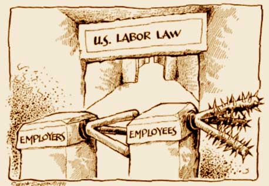
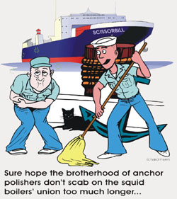

This is the news page for all IWW Departments and Unions. This page displays *all* news items from every Department and Union. To see news only from a particular Department, click on the Department title below.
For an overview of the IWW's Union structure, please visit the Unions homepage.
For branch, campaign, or general labor news, click on the appropriate sub-menu bars at the left under
the main "news" bar.
Submitted on Sun, 10/09/2005 - 5:51pm
By Alexis Buss - Industrial Worker, September 2005.
In a stunning turn-around from recent decisions limiting workers' rights, the Bush-appointed U.S. National Labor Relations Board issued a June 7 ruling which requires that every trip to the bar, ballpark or café among coworkers should include discussion of wages, hours and working conditions. Otherwise, workers may not have legal protections for hanging out with one another.
Ok, not quite. The case, which originates in a charge filed by SEIU Local 24/7 against Guardsmark, a San Francisco-based security company, was filed to deal with three Guardsmark work rules relating to workers' abilities to talk to one another, and enlist the support of the public, including the firm's clients:
1) A "chain of command" rule, which says that on-duty workers may only take problems up a chain of command in a very proscribed way, and that workers may not register complaints with the company's clients;
2) A "no-solicitation" rule prohibiting solicitation and the handing out of literature while on duty or in uniform;
Submitted on Sun, 10/09/2005 - 5:40pm
 By Jon Bekken - Industrial Worker, September 2005.
By Jon Bekken - Industrial Worker, September 2005.
The AFL-CIO suffered a devastating split as it celebrated the 50th anniversary of its founding July 25-28, with three unions representing nearly a third of its members quitting, and two others refusing to participate in its biennial convention. The Teamsters and Service Employees unions withdrew on the eve of the convention; the United Food and Commercial Workers quit the Federation as delegates were leaving Chicago.
The Change to Win Coalition kicked things off with a high-energy press conference packed with union staffers. The presidents of all six CWC unions - SEIU, Unite-HERE, Teamsters, UFCW, Laborers and United Farm Workers - spoke to an enthusiastic crowd, but the surface unity quickly dissolved when things got down to specifics. Four Coalition unions boycotted the AFL convention, two said they would participate. The officers were unwilling to say whether their unions would formally quit the AFL-CIO; the decisions trickled in over the next few days.
While CWC representatives said the split was over the need to "restructure" the Federation to focus resources on organizing, the closest thing to a specific illustration of differences on offer was when SEIU President Andy Stern contrasted the wording of the AFL leadership's and CWC's resolutions: where the AFL-CIO resolutions employed the word "should," the Coalition used the word "shall." Such momentous differences can not help but inspire a movement.
Submitted on Sun, 10/09/2005 - 5:16pm
 By Eugene Plawiuk - Industrial Worker, September 2005.
By Eugene Plawiuk - Industrial Worker, September 2005.
It is time for the labour movement in Canada to grow a backbone and "Just Say No!" to working with or obeying Labour Relations Boards and their rulings.
In Alberta, recent rulings against unions include one that it's legal for Finning to outsource its work to the rat union CLAC plant. The fact that Jim Dinning, who hopes to replace Ralph as Premier of Alberta, sits on the Finning board probably influenced this decision against the Machinists whose members are having their jobs contracted out.
A disputes inquiry is being held into the Lakeside Packers strike, effectively ending the strike for 60 days, but with no guarantee of binding arbitration. The union requested binding arbitration and the Minister of Labour never responded. Lakeside Packers is owned by the world's biggest meat merchant, Tyson Foods. Tyson is happy. Their plant is operating. Supervisors are telling employees the union is powerless.
There is no fair or level playing field for workers in Alberta labour relations. The game is rigged in favour of the bosses. While unions have representatives on the Labour Relations Board, so do the bosses. In this case the government picked a management lawyer representing the anti-union Construction Industry Merit Shops as chair.
Submitted on Sat, 09/17/2005 - 5:03am
Η εργατική τάξη και τα αφεντικά δεν έχουν τίποτα το κοινό.
Submitted on Sun, 07/31/2005 - 9:04pm
By Richard Myers — 31 July 2005
Most media ink and bytes have been about the split. Important? Sure. But too little attention has been paid to the AFL-CIO's anti-war resolution.
How significant might such a stance be for a labor federation? In the aftermath of the American entry into World War I, just such an anti-war view provoked the systematic dismantling of the Industrial Workers of the World (IWW) in what came to be called the Palmer Raids. Union halls were ransacked throughout the country, and nearly two hundred IWW leaders were imprisoned for opposing the war and for "criminal syndicalism." (Yet the IWW has survived, and hasn't changed its views about war.)
So the AFL-CIO has taken a bit of a radical turn, at least in one dimension. The anti-war resolution is remarkable, if only because it is such a dramatic departure from the past history of the federation.
What remains to be assessed during the mainstream labor movement's current introspection?